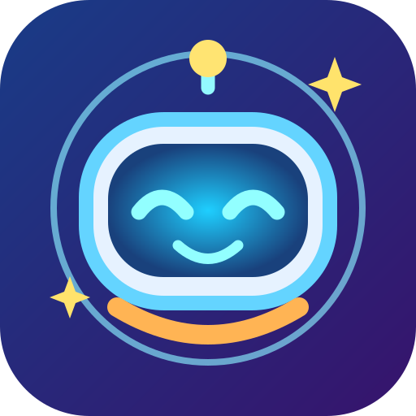

Zig & the Lost Star Map
首次需要联网下载游戏。完成后打开主屏幕图标即可离线玩。
First visit needs internet. Once installed and cached, Zig works offline.
Preparing… / 正在准备
iPhone: Open in Safari → Share → Add to Home Screen.
在 Safari 中打开 → 分享 → 添加到主屏幕。

首次需要联网下载游戏。完成后打开主屏幕图标即可离线玩。
First visit needs internet. Once installed and cached, Zig works offline.
iPhone: Open in Safari → Share → Add to Home Screen.
在 Safari 中打开 → 分享 → 添加到主屏幕。